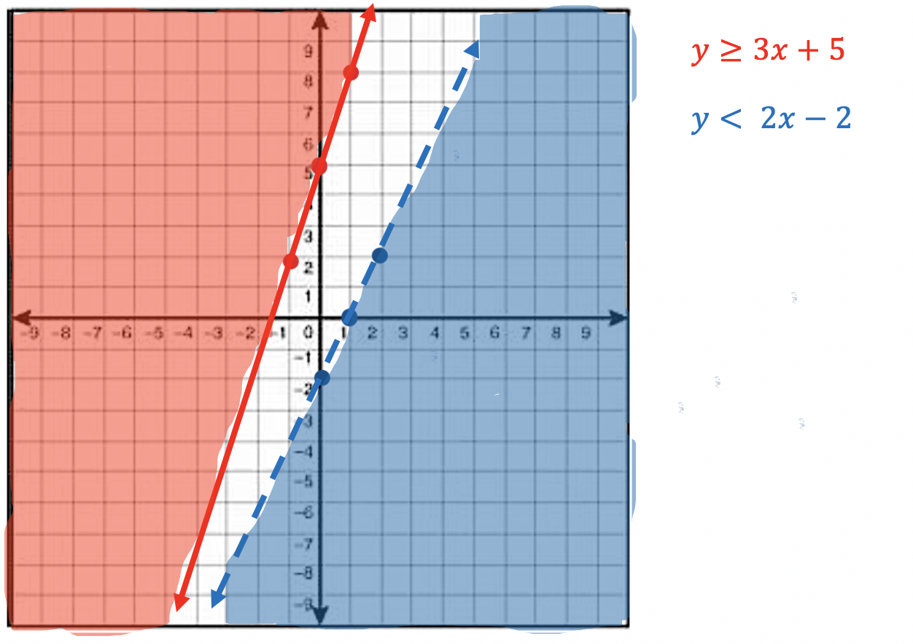

Please review Graphing y = mx + b prior to starting this module.
In this module we will learn how to graph a system of linear inequalities. Please review Graphing a Linear Inequality before continuing this module.
Let's begin graphing Systems of Inequalities. "Systems" indicate that we will be graphing two lines on the same graph, both inequalities. So we will be using the rules for solid or dashed lines, as well as the concept of shading above or below the line.
The new material will cover what happens to our solution region when we have 2 lines on the same graph and our solution regions overlap eachother.
Rules:
≥ or ≤ Use a solid line for your graph
> or < Use a dashed line for your graph
≥ or > Shade above the line
≤ or < Shade below the line
Example 1:
Graph the system y ≥ 3x + 5 and y < 2x - 2

Example 2:
Graph the system y ≥ 2x - 3 and y < -3x + 4
Example 3:
Graph the system y ≥ 4x - 5 and y ≤ -3x + 4
Example 4:
Graph the system y < x + 2 and y ≥ -2x + 1